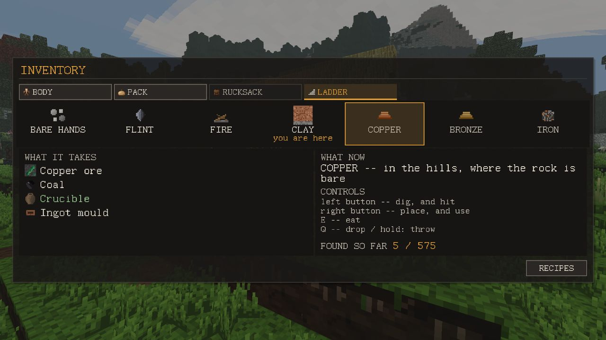

The path
Seven ages, in the order you live through them. Every step is a reason to go somewhere.
The pack (I) has a tab called LADDER. It lists the seven ages, marks you are here, and opens on the first one you have not reached. Under it the game says what you have never held yet and what kind of place it is found in. It names a kind of place, not a spot: there is no arrow to the nearest clay.
An age counts as reached the moment the thing that is that age has been in your pack once: a flint flake, a copper ingot. Ingredients do not count; ore and charcoal in a bag are not yet smelted metal.
next update The tab also keeps a count, FOUND SO FAR, of the kinds of things you have held. The total now counts only what can be carried: what is placed from the pack, items, what a block breaks into, what a recipe makes, and a plant dug up with its roots. Before, it also counted water, a burning furnace, a carcass, a picked-bare bush and thin ice, which never come to a pack, so a full count could not be reached however you played. Now it can.

Bare hands
Wants: pebble, stick, fibre. Where: underfoot, in any meadow.
Pebbles lie on the ground, sticks under trees, fibre comes from tall grass and reeds. See Getting started.
Flint
Wants: flint, stick, fibre. Where: on gravel and river banks. Reached by: a flint flake or a flint knife.
Walk to the nearest river or lake and follow the pale gravel strip at the water's edge. Flint is also on bare rock, in scree and on cave floors. One flint knaps into three flakes; the flakes make the worked stick, the knife head and, later, the hoe.
Fire
Wants: stick, log, flint. Where: in standing timber. Reached by: a campfire, charcoal or a firepit.
The tab spells it out: drop three sticks and a log on the ground and strike them with flint. That firepit is the first fire you can reach with only a flint knife. A campfire from the recipe needs cobblestone, and cobblestone needs a pickaxe.
Clay
Wants: clay, cobblestone, sand. Where: on gravel and river banks. Reached by: a kiln, a crucible or an ingot mould.
Clay lies in a layer under flat, low ground near water: floodplains, old lake beds, low meadows. On low flat ground three spades down usually reaches it. The cut bank on the outside of a river bend shows the layers in its wall: turf, earth, clay, stone.
- Kiln: 8 clay + 4 cobblestone, by hand. This is the clay furnace that metalwork needs. It burns 150° hotter than a campfire on the same fuel.
- Crucible: 4 clay + 1 sand. Ingot mould: 3 clay. Both come out raw and must be fired: in a lit kiln (110 seconds each), or in a pit kiln dug in the ground, which needs no kiln and no charcoal but takes 15 minutes. See Crafting.
- Raw clay dries first. A wet piece cracks in the fire about half the time; a dry one never does. Lay it on the ground in the sun (Shift + right-click) or leave it in a chest for a couple of days.
Copper
Wants: copper ore, charcoal (coal), crucible, ingot mould. Where: in the hills, where the rock is bare. Reached by: a copper ingot or native copper.
Copper is a hill metal. There is none under lowland. The higher the land, the more copper in its rock.
- Native copper: green-crusted lumps on rocks and scree, only in copper country (hills and mountains). Picked up by hand. Two make an ingot.
- Copper ore: green specks in the stone, broken with a pickaxe.
- A green patch in a steep hillside is a copper outcrop: a sign there is copper under that hill, not a store of it. It is rare.
Smelting: 3 copper ore + 2 charcoal + crucible + ingot mould, at any fire. The crucible and mould come back, and a lump of slag is left beside the ingot. But copper only melts at orange heat, and only charcoal burning as the fuel gets a fire that hot. On wood the crucible will sit there forever and the line under the fire will say the heat is too low.
Charcoal: 3 logs in a fire make 1 charcoal (75 seconds). A charcoal pit gives more for the same wood. See Crafting.
Copper tools: the knife and spear are forged at the kiln (ingot + worked stick + sinew for the knife, cord for the spear). The axe, pick, shovel and hoe heads are cast at the kiln in the mould, then hafted by hand: head + worked stick + sinew. Sinew comes off a carcass with a knife, after the hide.
A copper pick is the key to iron. Iron ore cannot be broken with a stone pickaxe at all.
Bronze
Wants: tin ore, copper ingot, crucible, ingot mould. Where: far from home, in tin country: an expedition. Reached by: a bronze ingot.
Tin lies only in tin districts, areas a few hundred blocks across. In new worlds none is closer than about 350 blocks to where you woke; the nearest is usually 400 to 800 blocks away. Inside a tin district there is ore in shallow rock, and stream tin, dark shiny pebbles, on the river banks; you pick them up by hand.
- Tin ingot: 2 tin ore + 1 charcoal + crucible + mould, at a fire burning charcoal (it needs yellow heat).
- Bronze: 4 copper ingots + 1 tin ingot → 5 bronze ingots, at the kiln.
Pack food and a jug. This is a journey, not a walk to the next river.
Iron
Wants: iron ore, charcoal, bloomery. Where: deep in the rock, down a shaft. Reached by: an iron bloom or an iron ingot.
Iron ore lies deep, and the deeper the more of it. It needs a copper pickaxe or better. Iron does not go through a crucible; it is made in a bloomery:
- Bloomery: 16 bricks + 4 mortar + 8 cobblestone, by hand. Bricks: 4 clay → 4 raw bricks, then fired at the kiln. Clay mortar: 2 handfuls of clay + 1 handful of sand (digging clay and sand gives them a handful at a time; four handfuls pack back into a block).
- Iron bloom: 3 iron ore + 4 charcoal in the bloomery, 5 minutes. It leaves slag.
- Iron ingot: 1 bloom + 1 charcoal in the bloomery, 2 minutes.
- Steel ingot: 1 iron ingot + 2 charcoal at the kiln, 5 minutes. Steel tools are quenched as they are made: steel ingots + worked stick + 2 sinew + a jug of water.
Iron without a mine: rusty stones (pebbles with an orange stain) lie on river banks and, more thickly, in bogs. Four make one iron dust by hand; 3 iron dust + 4 charcoal in the bloomery make the same bloom as ore.
Bloomery iron is about as hard as bronze, no more. What beats both is steel.
After copper: bronze or iron?
You do not have to do bronze before iron. Both need a long trip; they go to different places:
- Bronze means finding a tin district, hundreds of blocks away.
- Iron means a copper pickaxe and a deep shaft, or a long walk along rivers and bogs collecting rusty stones, plus a lot of charcoal and a bloomery.
The tools come out close to each other. Steel, made from iron, is better than both, and costs two more charcoal and five more minutes at the kiln per ingot.